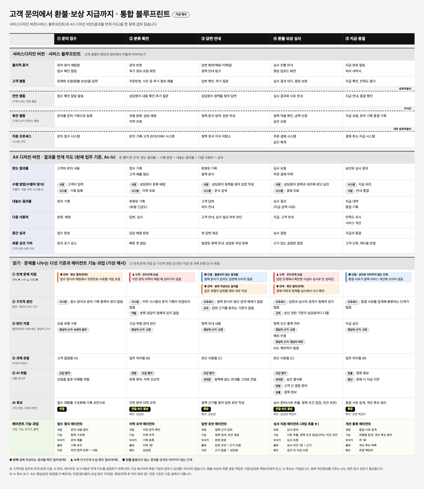
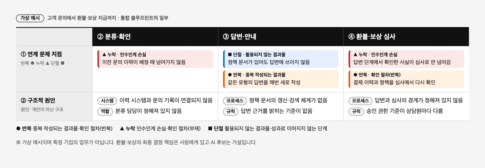
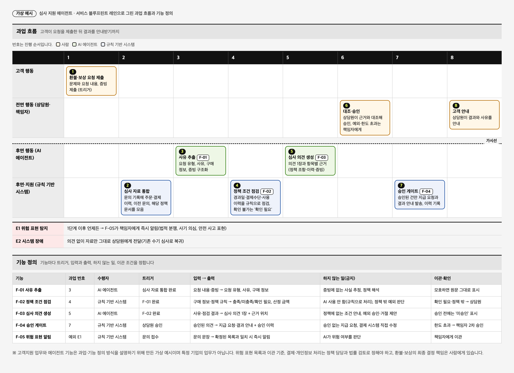
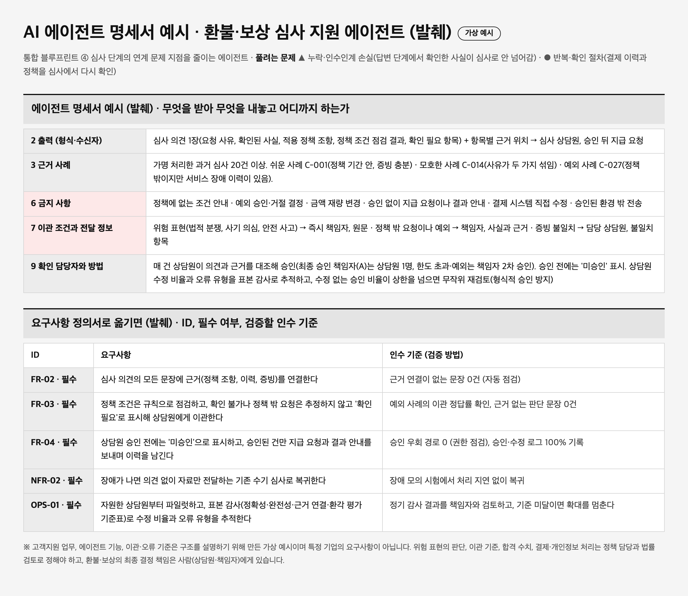

AX(AI Transformation)라는 말이 프로젝트에 자주 등장하면서, 서비스디자이너와 UX기획자에게 같은 질문이 생겼습니다. 이것은 지금까지 해 온 일의 연장일까, 전혀 다른 일일까. 이 글은 그 질문을 서비스디자이너의 관점에서 풀어 봅니다. 답을 먼저 말하면, 절반은 이미 아는 일이고 절반은 새로 배워야 하는 일입니다.
이미 아는 것, 달라지는 것
서비스디자이너와 UX기획자는 오래전부터 서비스를 지도로 그려 왔습니다. 고객 여정 지도, 서비스 블루프린트, 프로세스맵으로 서비스가 어떻게 돌아가는지 보고, 페인포인트를 찾습니다. AX에서도 이 지도는 그대로 쓰입니다. 달라지는 것은 읽는 관점입니다.
서비스디자인은 고객과 직원의 니즈에서 출발해 어떤 가치가 필요한지를 정의합니다. AX는 같은 서비스를 결과물이 만들어지고 다음 단계에서 쓰이는 흐름, 곧 일하는 방법에서 봅니다. 앞의 관점이 올바른 문제와 가치를 정하고, 뒤의 관점이 그 가치를 만드는 일의 구조를 바꿉니다. 그래서 페인포인트는 출발점이 아니라, 결과물의 연계가 끊기는 지점을 가리키는 증거가 됩니다. 기존 방식을 두고 같은 일을 더 빠르게 하는 AI 최적화도 분명한 가치가 있습니다. AX는 그보다 범위가 넓어, 고객이 받는 가치, 업무 방법, 결정 구조, 사람의 역할 가운데 하나 이상을 바꿉니다.
필자의 의견 AI 도입의 목적을 AI에서 찾으면 안 됩니다. 해결하려는 문제와 얻으려는 목표가 먼저입니다. 고객과 직원의 맥락에서 문제를 찾고, 여정 전체를 조망하며, 개선안을 시험해 온 서비스디자이너와 UX기획자가 잘하는 일입니다. 서비스디자인의 관점에서 AI는 터치포인트와 프로세스를 개선하게 해 주는 핵심 동인 중 하나일 뿐, 목적이 아닙니다.
사례: 고객 문의에서 환불·보상 지급까지
이 글의 사례는 가상의 온라인 서비스의 고객지원입니다. 고객이 환불이나 보상을 문의하면 문의 한 건이 '문의 기록'(처리 상태와 이력을 한곳에 담는 기록)으로 등록되고, 상담원이 정책을 찾아 답한 뒤 심사를 거쳐 지급합니다. 고객지원은 AI 도입 효과를 측정한 연구와 공개 사례가 많고, 환불·보상 심사는 보험금 청구처럼 사람의 승인으로 끝나는 구조라 에이전트의 역할을 나누어 보기에 알맞습니다. 업무와 문제 지점, AI 후보는 설명을 위해 만든 가상 예시이며, AI 도입 전의 현재 업무(As-Is)를 기준으로 합니다.

위쪽은 서비스디자인의 지도입니다. 고객 행동, 전면 행동, 후면 행동, 지원 프로세스가 층으로 쌓이고, 층 사이의 점선이 상호작용선, 가시선, 내부 상호작용선입니다. 아래쪽은 AX의 지도입니다. 한 행이 한 단계이고, 단계마다 받는 결과물, 수행 방법, 내놓는 결과물, 다음 사용처, 성과를 읽습니다. 질문이 "어디서 경험이 불편한가"에서 "내놓은 결과물이 다음 단계에서 제대로 쓰이는가"로 바뀝니다.
문제를 다섯 가지 기준으로 나눕니다
페인포인트를 찾았다면 그것이 어떤 종류의 문제인지 가릅니다. AX는 문제를 다섯 기준으로 나눕니다.
| 기준 | 묻는 것 |
|---|---|
| ① 연계 문제 지점 | 결과물의 연계가 어디서 끊기는가 |
| ② 구조적 원인 | 왜 끊겼는가 (프로세스·역할·규칙·시스템) |
| ③ 판단 지점 | 사람의 판단을 AI가 어디까지 도울 수 있는가 |
| ④ 과제 유형 | 고객 접점형, 업무 처리형, 판단 지원형 등 어떤 종류의 과제인가 |
| ⑤ AI 위험 | 오답, 유출, 편향, 과의존, 중단 등 AI를 넣으면 어떤 문제가 생기는가 |
현장에서 말하는 반복, 누락, 단절은 ①에 대응합니다. 반복은 중복 작성되는 결과물과 확인 절차, 누락은 인수인계 손실, 단절은 활용되지 않는 결과물과 성과로 이어지지 않는 단계입니다.

예시에서는 답변 단계에서 확인한 사실이 심사로 넘어가지 않고(누락), 정책 문서가 있어도 답변에 쓰이지 않습니다(단절). 원인은 상담원의 역량이 아니라 구조에서 찾습니다. 답변과 심사의 경계가 정해져 있지 않고, 승인 권한 기준이 상담원마다 다르기 때문입니다. 판단 지점은 정답의 근거로 가릅니다. 정책 조건을 충족하는지는 규정이 정답이라 규칙으로 점검하고, 정책 밖 예외를 인정할지는 정답이 여럿이라 AI가 제안하지 않고 사람이 정합니다.
AI가 들어갈 자리
문제와 목표가 먼저 정해지고, AI는 그 문제를 푸는 여러 수단 가운데 하나로 고릅니다. 구매 후 경과일 같은 정책 조건 점검은 규칙 기반 시스템으로 충분하므로 AI를 쓰지 않습니다. 에이전트는 서비스디자인의 틀 안에서 과업과 기능으로 정의합니다. 과업은 서비스 과정에서 수행되는 일이고, 기능은 그중 에이전트가 맡는 동작입니다.

심사 지원 에이전트의 과업 흐름입니다. 고객이 요청하면 시스템이 자료를 모으고, AI가 사유를 추출하고(F-01), 규칙 기반 시스템이 정책 조건을 점검하고(F-02), AI가 근거를 붙인 심사 의견을 만들고(F-03), 상담원이 대조해 승인하면 승인된 건만 지급 요청으로 이어집니다(F-04). AI가 맡는 기능은 다섯 중 둘뿐입니다. 기능마다 트리거, 입력과 출력, 하지 않는 일, 이관 조건을 정해 두는 것이 요구사항의 출발점입니다.

기능은 요구사항 ID와 필수 여부, 검증할 인수 기준을 붙여 요구사항 정의서(SRS, PRD 등)의 기초가 됩니다. 합격 기준 수치는 현업과 협의할 값이라 비워 두었습니다. 보험사 Allianz도 보장 확인, 부정 탐지, 지급액 산정을 일곱 개의 에이전트로 나누고 지급 결정은 사람이 하게 했다고 밝혔습니다. 사람이 언제 개입하고 무엇을 하지 않는지 정하는 일은, 서비스디자이너와 UX기획자가 경험을 설계하며 늘 해 온 일과 같은 종류입니다.
연구와 공개 사례가 말해 주는 것
최근 연구도 이 접근과 맞닿아 있습니다. 상담원 5,172명을 대상으로 한 연구에서 생성형 AI 보조는 시간당 해결 건수를 평균 15% 높였지만 효과는 초보 상담원(약 34%)에게 집중되었고(Brynjolfsson 등, 2025), 고객지원에서 AI는 앞단이 아니라 뒷단에 먼저 들어갔습니다(Reinhard 등, 2026). 서비스 접점은 제공자와 사용자가 사람인지 AI인지에 따라 나눠 볼 수 있고(Mortati·Viana Mundstock Freitas, 2025), 국내 연구는 데이터와 프로세스의 일관성, 책임 체계를 전제로 꼽습니다(Lee·Yi, 2025; 유해영, 2025). 사람의 문제도 큽니다. 관리자는 현장의 마찰을 과소평가하기 쉽고(Lopez-Lopez 등, 2026), 직원의 반응은 리더십과 투명성에 좌우됩니다(Castañeda 등, 2025).
공개 사례는 목적이 먼저라는 점을 보여 줍니다. Klarna는 AI가 한 달 만에 고객 대화의 3분의 2를 처리했다고 발표했지만 이후 품질 문제로 상담원을 다시 채용했고, 캐나다에서는 항공사 챗봇의 환불 규정 오안내가 항공사의 책임이라는 결정이 나왔습니다(Moffatt v. Air Canada, 2024 BCCRT 149). 기업 수치는 회사가 밝힌 값이고, 인용한 연구는 주로 고객지원을 대상으로 하므로 다른 산업은 별도 확인이 필요합니다.
서비스디자이너와 UX기획자가 맡을 자리
두 가지입니다. 올바른 문제와 가치를 정의하도록 돕는 일, 그리고 사람과 AI의 역할을 고객 경험과 운영에 맞추는 일입니다. 가치를 최종 결정하는 것은 조직이지만, 그 결정이 현장의 흐름과 사람들의 경험 위에서 내려지도록 돕는 것이 서비스디자인과 UX기획의 몫입니다. 출발은 AI가 아니라 문제 정의와 목표입니다.
실천해 보기: 과제 세 가지
- 지도 맞추기: 서비스 하나를 골라 블루프린트, 프로세스맵, 고객 여정 지도를 최신으로 맞춥니다.
- 문제 나누기: 페인포인트를 블루프린트 위에 표시하고 다섯 기준으로 분류합니다.
- 기능·과업 정의하기: 가장 큰 지점 하나에 과업 흐름을 그리고, 기능마다 트리거, 입력과 출력, 금지 사항, 이관 조건을 정해 소규모로 시험합니다.
참고문헌
- Reinhard, P., Li, M. M., Peters, C., Janson, A., & Leimeister, J. M. (2026). GenAI-infused service delivery: Micro-level augmentation patterns at the service frontline. Journal of Service Research. https://doi.org/10.1177/10946705251414283
- Mortati, M., & Viana Mundstock Freitas, G. (2025). AI in service design: A new framework for hybrid human–AI service encounters. Journal of Service Research, 29(1), 81–96. https://doi.org/10.1177/10946705251344387
- Lopez-Lopez, D., Fondevila-Gascón, J., Torres-Peregrina, B., & Marco-Simó, J. (2026). Aligning stakeholders in AI-enabled customer service: Toward human-centric adoption in electronic marketplaces. Electronic Markets, 36(1). https://doi.org/10.1007/s12525-026-00892-1
- Castaneda, A. R., Surachartkumtonkun, J., Maseeh, H. I., Thaichon, P., & Shao, W. (2025). Frontline employees in an AI-integrated workplace: Current perspectives and future research landscapes. Journal of Service Theory and Practice, 35(7), 30–60. https://doi.org/10.1108/JSTP-04-2024-0099
- Brynjolfsson, E., Li, D., & Raymond, L. (2025). Generative AI at work. The Quarterly Journal of Economics, 140(2), 889–942. https://doi.org/10.1093/qje/qjae044
- Lee, C., & Yi, H. (2025). 부동산, 미술품 중심 대체투자 서비스디자인 연구: AI 서비스 표준화를 위하여. Content and Industry, 7(5), 151–156. KCI
- 유해영 (2025). 생성형 AI 통합 공공서비스디자인 연구. 디지털예술공학멀티미디어논문지, 12(4), 447–456. KCI
공개 사례 출처
- Klarna AI assistant handles two-thirds of customer service chats in its first month (VKTR, 기업 발표 보도)
- Klarna Is Hiring Customer Service Agents After AI Couldn't Cut It on Calls (Entrepreneur, 2025)
- Moffatt v. Air Canada, 2024 BCCRT 149 (McCarthy Tétrault 해설)
- When the storm clears, so should the claim queue (Allianz, Project Nemo)